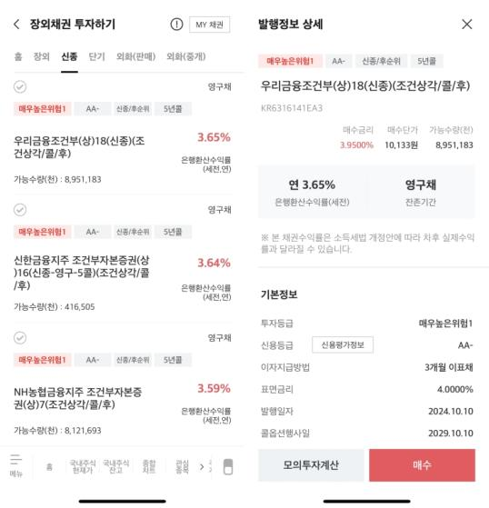

채권 · 코인
금리·환율·원자재 가격 변화와 위험을 관리하는 도구를 함께 살펴봅니다.
채권은 돈을 빌려준 약속장
‘채권’과 ‘채무’의 한자부터 구분하기
채권(債權)과 채무(債務)는 모두 ‘빚 채(債)’를 씁니다. 같은 빚의 관계를 서로 다른 입장에서 부르는 말입니다.
- 채권(債權): 빚 채(債) + 권리 권(權) — 돈이나 물건을 받을 권리
- 채무(債務): 빚 채(債) + 의무 무(務) — 빚을 갚아야 하는 의무
따라서 돈을 받을 권리가 있는 사람은 채권자, 갚아야 할 의무가 있는 사람은 채무자입니다.
다만 ‘채권’은 한자에 따라 뜻이 둘로 나뉩니다. 채권(債權)은 남에게 돈을 받을 권리이고, 채권(債券)은 정부나 기업이 돈을 빌리기 위해 발행하는 유가증권입니다. 이 단원에서 주로 다루는 것은 국채·회사채처럼 두 번째 뜻의 채권(債券)입니다.
약속을 지키지 못하면: 채무불이행
채무불이행은 채무자가 약속한 내용대로 빚을 갚거나 의무를 이행하지 않는 것을 말합니다. 예를 들어 약정한 날에 원금이나 이자를 지급하지 못하는 경우가 대표적입니다. 채권자는 계약 내용과 법적 절차에 따라 이행을 요구하거나 손해배상을 청구할 수 있고, 채권 투자에서는 이러한 가능성이 신용위험으로 나타납니다.
채무불이행이 발생했다고 해서 모든 돈을 즉시 잃는 것은 아닙니다. 발행자의 재산·담보·보증과 법적 절차에 따라 회수할 수 있는 금액과 시점이 달라질 수 있습니다. 그래서 채권을 고를 때는 이자율뿐 아니라 발행자의 재무 상태와 신용등급도 함께 확인해야 합니다.
어음과 수표: 돈을 지급하라는 증서
어음은 일정한 금액을 정해진 시점에 지급하겠다는 약속 또는 지급 지시를 적은 증서입니다. 대표적으로 약속어음은 발행인이 받을 사람에게 지급을 약속하는 방식이고, 환어음은 발행인이 제3자에게 지급을 지시하는 방식입니다. 어음은 만기 전에 다른 사람에게 넘기거나 금융기관을 통해 현금화하는 거래에도 쓰일 수 있습니다.
수표는 발행인이 은행에 예금에서 일정 금액을 지급하라고 지시하는 증서로, 일반적으로 제시되면 바로 지급하는 것을 전제로 합니다. 어음과 수표 모두 약속한 지급이 이뤄지지 않을 위험이 있으므로, 발행인·지급인과 만기·금액 같은 조건을 확인하는 것이 중요합니다.
채권을 산다는 것은 정부나 기업에 돈을 빌려주고 정해진 이자와 만기 원금을 받기로 하는 것입니다.
부동산·자동차 등록 때 만나는 의무매입채권(공채)
법령에 따라 부동산 등기나 자동차 등록 등을 할 때 의무적으로 매입해야 하는 의무매입채권(공채)도 있습니다. 세금처럼 납부 절차에 포함되지만, 매입자는 채권을 보유하므로 약정 조건에 따라 만기에 원금과 이자를 받을 권리가 있다는 점이 세금과 다릅니다.
- 국민주택채권: 주택·상가·토지 등의 소유권 이전 등기나 일정한 인허가 때 매입 대상이 될 수 있습니다. 국민주택사업 등에 필요한 재원을 마련하기 위해 발행합니다.
- 지역개발채권·도시철도채권: 지방자치단체에 자동차를 등록하거나 각종 인허가를 받을 때 매입 대상이 될 수 있습니다. 지역 도로·도시철도 등 공공 인프라 재원에 활용됩니다.
실제로는 만기까지 보유하는 대신, 매입과 동시에 금융기관 등에 되파는 즉시매도를 선택하는 경우가 많습니다. 이때 채권의 매입금액과 즉시매도 가격의 차이인 채권 할인액을 부담하며, 등기 비용이나 자동차 등록 비용의 ‘채권 할인료’로 표시되기도 합니다. 이는 별도의 단순 수수료라기보다 채권을 즉시 매도하면서 생기는 가격 차이입니다.
의무매입 여부·매입률·만기·할인액은 부동산의 종류와 금액, 차량과 배기량, 등록 지역, 감면 대상 등에 따라 달라집니다. 실제 거래에서는 법무사·등록 대행기관 또는 관할 행정기관의 안내를 확인하세요.
채권은 현물일까요?
‘현물’은 쓰는 맥락에 따라 뜻이 달라집니다. 금·원유·부동산처럼 물리적 형태가 있는 실물자산과 비교한다면, 채권은 실물이 아니라 돈을 받을 권리를 나타내는 금융자산(유가증권)입니다.
반면 선물 같은 파생상품과 비교할 때의 현물(spot)은 파생계약이 아닌 실제 기초자산을 뜻합니다. 이 맥락에서는 실제 채권을 사고파는 거래가 현물거래이고, 3년 국채선물·10년 국채선물처럼 미래 시점의 거래 조건을 먼저 정하는 계약은 선물거래입니다. 현물거래도 계약 즉시 또는 시장별로 정해진 결제일에 채권의 인도와 대금 결제가 이뤄질 수 있습니다.
즉 “금이나 원유처럼 실물인가?”라는 질문에는 아니오이고, “채권선물과 대비되는 실제 채권인가?”라는 질문에는 현물이다라고 답할 수 있습니다.
국채는 정부가 발행하고, 회사채는 기업이 발행합니다. 발행자가 약속한 돈을 갚지 못할 가능성은 신용위험이라고 합니다.
만기가 길수록 금리 변화에 가격이 더 민감해지는 경향이 있습니다. 이를 설명할 때 듀레이션이라는 지표를 사용합니다.
금리 변화와 듀레이션에 따라 예상 가격 변화가 어떻게 달라지는지 확인하세요. 잠시 쉬면서 다음 실습 과제를 확인해 보세요.
채권의 종류: 누가 발행하는지로 구분하기
채권은 이름보다 “누가 돈을 빌리는가”로 구분하면 이해하기 쉽습니다. 발행 주체에 따라 국채, 지방채, 특수채, 금융채, 회사채로 크게 나눌 수 있고, 발행 주체가 다르면 신용위험과 수익률도 함께 달라집니다.
국가별 채무증권 잔액과 10개국 합계에서 차지하는 비중을 비교합니다.
국채는 정부(기획재정부)가 발행하는 채권입니다. 국고채권이 대표적이며 3·5·10·20·30·50년처럼 만기가 다양하고, 국민주택채권·재정증권처럼 특정 목적으로 발행되는 국채도 있습니다. 한국에서 신용위험이 가장 낮다고 여겨지는 채권군입니다.
지방채는 서울시·경기도 같은 지방자치단체가 지역 개발이나 사업 재원을 마련하려고 발행하는 채권입니다. 도시철도채권, 지역개발채권 등이 예시이며, 자동차를 등록하거나 부동산 등기를 할 때 의무적으로 매입해야 하는 경우도 있습니다.
특수채는 특별법에 따라 설립된 공공기관이 발행하는 채권입니다. 한국전력공사, 한국도로공사, 한국토지주택공사(LH), 예금보험공사가 발행하는 채권과 한국은행이 통화량을 조절하려고 발행하는 통화안정증권(통안채)이 여기에 속합니다. 정부가 직접 발행하지는 않지만 공공 성격이 강해 국채 다음으로 안전하다고 여겨지는 경우가 많습니다.
금융채는 은행 등 금융회사가 발행하는 채권입니다. 산업은행·기업은행 같은 특수은행이나 시중은행이 발행하는 채권, 카드사·캐피탈사 같은 여신전문금융회사가 발행하는 여전채가 포함됩니다. 회사채는 삼성전자·현대자동차처럼 일반 기업이 사업 자금을 마련하려고 발행하는 채권으로, 발행하는 기업의 실적과 재무 상태에 따라 신용위험과 금리가 크게 달라질 수 있습니다.
전환사채(CB): 채권과 주식의 선택권을 함께 가진 회사채
전환사채(CB, Convertible Bond)는 처음에는 정해진 이자를 받는 채권으로 보유하다가, 정해진 조건 아래 발행 회사의 주식으로 바꿀 수 있는 특수한 회사채입니다. 채권의 이자·상환 구조에 전환청구권을 더한 상품이므로, 채권과 주식의 성격을 함께 갖습니다.
- 주가가 전환가액보다 낮거나 기대에 못 미칠 때: 주식으로 바꾸지 않고 채권으로 보유하며, 약정 조건에 따라 이자와 만기 상환을 기대할 수 있습니다.
- 주가가 크게 올랐을 때: 투자자는 전환청구권을 행사해 미리 정한 가격인 전환가액을 기준으로 주식으로 전환한 뒤, 주가 상승에 따른 이익을 기대할 수 있습니다.
발행 기업은 투자자에게 주식 전환 기회를 제공하는 대신 일반 회사채보다 낮은 이자율로 자금을 조달할 수 있습니다. 투자자는 채권으로서의 이자·상환 가능성과 주가 상승에 따른 전환 이익을 함께 고려할 수 있습니다. 다만 발행 기업이 이자나 원금을 지급하지 못하면 손실이 발생할 수 있으므로, 원금이 보장되는 상품은 아닙니다.
기존 주주 유의사항: 전환권 행사로 새 주식이 발행되면 주식 수가 늘어나 기존 주주의 지분율과 주당 가치가 희석될 수 있습니다. 전환가액 조정, 전환 가능 시기, 발행 규모와 같은 조건은 주가와 기존 주주에게 미치는 영향을 판단할 때 함께 확인해야 합니다.
무기명채권: 증서를 가진 사람이 권리자로 보이는 형태
무기명채권(Bearer Bond)은 채권 증서에 소유자의 이름이 적혀 있지 않은 형태입니다. 기명채권과 달리 원칙적으로 증서를 점유한 사람이 권리자로 인정되므로, 종이를 넘기는 방식으로 양도할 수 있고 별도의 명의개서 절차가 필요하지 않은 것이 특징입니다.
- 장점: 증서 인도만으로 양도가 비교적 간편합니다.
- 위험: 분실·도난 때 권리 회복과 소유 증명이 어렵고, 거래 경로를 추적하기도 어렵습니다.
- 익명성 문제: 이런 특성은 과거 탈세·자금세탁·비자금 조성 같은 불법적 자금 이동에 악용될 소지가 있었습니다.
현재 한국의 제도권 자본시장에서는 실물 증서 대신 전자 장부에 권리를 기록하는 전자등록 방식이 널리 사용됩니다. 「주식·사채 등의 전자등록에 관한 법률」은 2019년 9월 16일부터 시행됐으며, 전자등록된 국채·지방채·회사채 등의 권리는 계좌 기록으로 관리됩니다. 따라서 일반 투자자가 거래하는 국채·회사채에서 과거처럼 실물 증서의 점유만으로 익명 소유를 주장하는 무기명채권은 사실상 보기 어렵습니다.
일반적으로 국채, 특수채·통안채, 금융채, 회사채 순으로 신용위험이 커진다고 이야기되지만 이는 절대적인 순서가 아닙니다. 우량 회사채가 재무구조가 취약한 금융회사의 채권보다 안전하게 평가되는 경우도 있으므로, 종류 이름만 보지 말고 개별 발행자의 신용등급을 함께 확인해야 합니다.
채권의 이율은 어떻게 읽을까요?
채권 화면의 표면금리(쿠폰금리)는 발행할 때 정한 이자율입니다. 예를 들어 액면 1,000만 원·표면금리 연 3%·연 2회 이자 지급 채권이라면, 조건이 유지된다는 가정 아래 6개월마다 세전 15만 원의 이자를 받습니다. 반면 수익률은 지금 가격에 사서 만기까지 보유할 때의 수익을 연율로 환산한 값이라 시장가격에 따라 계속 바뀝니다. 보통 시장금리가 오르면 기존 채권 가격은 내려가고 수익률은 올라가는 방향으로 움직입니다.
| 채권 종류 | 이율을 볼 때 | 공식 확인 |
|---|---|---|
| 국고채 | 만기별 입찰금리·유통수익률, 표면금리와 이자 지급일 | 기획재정부 국채시장 |
| 개인투자용 국채 | 월별 청약 공고 금리, 만기·가산금리·중도환매 조건 | 개인투자용 국채 안내 |
| 통안채·특수채 | 발행기관, 만기, 입찰·유통수익률, 신용등급 | 한국은행 · 금융투자협회 채권정보센터 |
| 금융채·회사채 | 표면금리뿐 아니라 신용등급, 동일 만기 국고채 대비 가산금리(스프레드), 조기상환 조건 | 금융투자협회 채권정보센터 · SEIBro 증권정보포털 |
| 지방채 | 발행 지방자치단체, 상환 재원, 만기와 이율 | 행정안전부 및 해당 지자체 공고 |
회사채나 금융채의 수익률이 국고채보다 높아 보인다면, 같은 기간 돈을 빌려줄 때 추가로 감수하는 신용위험·유동성위험 등에 대한 보상인 신용스프레드가 반영됐을 수 있습니다. 높은 이율만으로 유리하다고 판단하지 말고, 발행자·신용등급·만기·중도매도 가능성·세전/세후 수익률과 증권사 매수·매도 가격을 함께 비교하세요.
장내채권과 장외채권, 어디서 사는지의 차이
채권은 어디서 거래되는지에 따라 장내채권과 장외채권으로도 나눌 수 있습니다. 장내채권은 한국거래소(KRX)에 상장되어 거래소를 통해 매매되는 채권이고, 장외채권은 거래소를 거치지 않고 증권사가 보유한 채권을 고객에게 직접 사고파는 방식입니다.
KRX의 채권시장은 다시 몇 가지로 나뉩니다. 국채전문유통시장은 국채딜러(은행·증권사) 사이의 대량 매매가 중심이라 개인이 직접 참여하기 어렵고, 일반채권시장은 개인도 국채·회사채·전환사채 등을 거래소 시세로 매매할 수 있으며, 소액채권시장은 자동차 등록·부동산 등기 때 의무로 사야 하는 제1종 국민주택채권 같은 채권을 즉시 매도할 수 있게 해 주는 시장입니다.
반면 장외채권은 증권사 앱의 “채권” 메뉴에서 흔히 보는 방식입니다. 증권사가 보유하거나 조달한 채권 재고를 자체적으로 정한 가격(수익률)에 고객에게 판매·매입하며, 거래소처럼 여러 참여자의 매수·매도 호가가 실시간으로 경쟁하는 구조는 아닙니다. 국내에서 개인이 실제로 접하는 채권 매매의 상당수는 이 장외채권 방식입니다.

장내채권은 거래소 시세가 공개되어 가격을 비교적 투명하게 확인할 수 있지만, 개인이 접근하기 좋은 종목은 국채 등 일부로 제한되는 경우가 많습니다. 장외채권은 증권사마다 보유 재고와 제시 가격이 달라 같은 채권도 증권사별로 수익률이 다를 수 있으므로, 매수 전 2~3개 증권사 앱의 호가를 비교해 보는 습관이 도움이 됩니다.
채권과 적금, 쉬운 예시로 구분하기
적금은 “내가 매달 용돈을 조금씩 저금통에 모아 은행에 맡기고, 만기에 은행이 정한 이자를 얹어 돌려받는 것”에 가깝습니다. 채권은 “내가 친구에게 목돈 100만 원을 한 번에 빌려주고, 매년 이자 5만 원씩 받다가 1년 뒤 100만 원을 돌려받기로 약속하는 것”에 가깝습니다. 둘 다 “정해진 이자와 원금을 약속받는다”는 점은 비슷하지만, 적금은 은행에 조금씩 저축하는 것이고 채권은 정부·기업에 목돈을 한 번에 빌려주는 것이라는 차이가 있습니다.
원금이 보호되는 방식도 다릅니다. 적금은 예금자보호법에 따라 은행이 망하더라도 1인당 해당 금융회사에서 원금과 이자를 합쳐 일정 한도까지 보호받을 수 있습니다. 반면 채권은 예금자보호 대상이 아니며, 원금과 이자를 받을 수 있는지는 오직 발행자(정부 또는 기업)가 약속을 지킬 수 있는지, 즉 신용위험에 달려 있습니다. 국채는 정부의 신용을, 회사채는 그 기업의 신용을 보고 돈을 빌려주는 셈입니다.
중간에 돈이 필요할 때의 차이도 있습니다. 적금을 만기 전에 깨면 보통 처음 약속한 이자보다 낮은 중도해지 이율이 적용되지만, 원금 자체가 줄어드는 경우는 드뭅니다. 반면 채권을 만기 전에 시장에서 팔면 그날의 시장금리·가격에 따라 원금보다 더 받을 수도, 덜 받을 수도 있습니다. “빌려준 돈을 약속대로 돌려받는다”는 점은 같지만, 중간에 현금화할 때 적금은 이자만 손해 볼 가능성이 크고 채권은 원금 자체가 흔들릴 수 있다는 점이 다릅니다.
금리가 오르면 채권 가격은 왜 내려갈까요?
채권 가격과 시장금리(수익률)는 일반적으로 반대 방향으로 움직입니다. 시장금리가 오르면 기존 채권 가격은 내려가고, 시장금리가 내리면 기존 채권 가격은 오르는 경향이 있습니다.
새 채권과 기존 채권을 비교해 보세요
- 시장금리가 3%에서 5%로 올랐을 때: 새 채권은 더 높은 이자를 주지만 기존 채권은 3% 쿠폰을 유지합니다. 기존 채권을 팔려면 새 채권과 경쟁할 수 있도록 가격이 낮아져야 할 수 있습니다.
- 시장금리가 3%에서 1%로 내렸을 때: 기존의 3% 쿠폰은 새 채권보다 상대적으로 매력적입니다. 이 채권을 사려는 수요가 늘면 가격에 프리미엄이 붙을 수 있습니다.
여기서 ‘금리’는 보통 시장에서 요구하는 수익률을 뜻합니다. 이미 발행된 채권의 표면금리(쿠폰금리) 자체가 시장금리에 맞춰 매일 바뀌는 것은 아닙니다. 대신 그 고정된 이자 흐름의 현재가치가 달라지면서 거래 가격과 만기수익률이 조정됩니다.
만기가 길수록 가격 변화가 커지는 이유
| 구분 | 단기채 (예: 1~3년) | 장기채 (예: 10~30년) |
|---|---|---|
| 금리 변동 시 가격 변화 | 상대적으로 작음 | 상대적으로 큼 |
| 이유 | 유리하거나 불리한 이자를 받는 기간이 짧음 | 고정된 이자와 시장금리의 차이가 더 오랫동안 영향을 줌 |
이 가격 민감도를 가늠하는 지표가 듀레이션입니다. 같은 금리 변화라면 듀레이션이 큰 채권일수록 가격 변동 폭도 커지는 경향이 있습니다. 따라서 금리 방향에 대한 전망이 빗나갈 때 장기채는 단기채보다 큰 가격 손실을 겪을 수 있습니다.
금리 하락을 예상하면 장기채의 가격 상승 가능성을, 금리 상승을 예상하면 장기채의 가격 하락 위험을 검토하는 식으로 이해할 수 있습니다. 다만 금리 전망만으로 매수·매도를 결정하기보다 만기, 듀레이션, 신용위험, 유동성, 투자 기간을 함께 확인해야 합니다.
금리 변화와 듀레이션을 바꾸어 단기채·장기채의 예상 가격 변화를 비교해 보세요.
금리와 성장잠재력: 할인율이 기업 가치에 미치는 영향
주식 가격은 흔히 그 기업이 앞으로 벌어들일 미래 이익을 오늘의 가치로 환산한 값으로 설명됩니다. 이때 미래의 돈을 오늘 가치로 바꾸는 데 쓰는 비율을 할인율이라고 하며, 할인율은 시장금리의 영향을 크게 받습니다. 금리가 오르면 할인율도 함께 오르는 경향이 있고, 같은 미래 이익이라도 오늘 가치로 환산한 금액은 작아집니다.
이 효과는 기업마다 다르게 나타납니다. 지금 당장 이익을 많이 내는 기업은 가까운 미래의 현금흐름 비중이 커서 할인율 변화의 영향을 상대적으로 덜 받습니다. 반면 지금은 이익이 적거나 없어도 몇 년 뒤 큰 성장을 기대하는 기업, 즉 성장잠재력에 기대는 비중이 큰 기업은 먼 미래의 현금흐름 비중이 커서 할인율이 조금만 올라도 현재가치가 크게 줄어들 수 있습니다.
그래서 “금리가 오르면 성장주가 더 크게 흔들린다”는 말이 자주 나옵니다. 예를 들어 아직 이익 규모가 크지 않은 기술·바이오 기업은 금리 상승기에 주가가 크게 조정받는 경우가 있고, 반대로 금리가 내려갈 때는 같은 이유로 더 크게 오르는 경우도 있습니다. 다만 이는 하나의 경향일 뿐이며, 실제 주가는 기업 실적, 산업 전망, 시장 심리 등 다른 요인과 함께 움직입니다.
이 개념은 앞서 본 채권의 듀레이션과 닮았습니다. 만기가 길어 먼 미래의 현금흐름 비중이 큰 채권일수록 금리 변화에 가격이 더 민감했듯이, 주식도 이익 실현 시점이 멀고 성장잠재력에 기대는 비중이 클수록 금리 변화에 더 민감하다고 이해할 수 있습니다. “성장주는 듀레이션이 긴 자산과 비슷하게 움직인다”는 비유가 여기서 나옵니다.
투자 판단에서는 “금리가 오르니 성장주를 무조건 피한다”보다, 내가 담은 자산이 가까운 미래의 이익 중심인지 먼 미래의 성장잠재력 중심인지 구분해 보는 것이 먼저입니다. 기업 재무제표나 상품설명서에서 현재 이익 규모와 성장률 전망을 함께 확인하면, 금리 변화에 따라 내 포트폴리오가 왜 흔들리는지 이해하는 데 도움이 됩니다.
미국 장기채 ETF, 국내에서 투자하는 방법
미국 장기채 ETF는 만기가 20~30년 남은 미국 국채를 담아 그 가격 변화를 따라가는 상품입니다. 해외 거래소에는 아이셰어즈의 20년 이상 미국국채 ETF(TLT), 뱅가드의 초장기 국채 ETF(EDV) 같은 상품이 상장되어 있고, 원화를 달러로 환전한 뒤 해외주식 계좌로 직접 매수할 수 있습니다.
국내 거래소에도 국내 자산운용사가 미국 장기국채(주로 20~30년물)를 담아 만든 ETF가 상장되어 있습니다. 원화로 바로 매수할 수 있어 별도 환전 절차가 필요 없다는 점이 다르지만, 상품 내부에서는 여전히 달러 표시 채권을 보유하므로 환율 변동의 영향을 받습니다. 상품명에 “(H)”가 붙어 있으면 환헤지형(환율 변동 영향을 줄인 상품), 붙어 있지 않으면 환노출형(환율 변동을 그대로 반영하는 상품)인 경우가 많으므로 매수 전 반드시 확인해야 합니다.
장기채 ETF는 앞서 본 듀레이션 개념처럼 금리 변화에 특히 민감합니다. “미국 금리가 내릴 것 같아서 장기채를 산다”는 접근은 금리가 예상과 반대로 오르면 단기채나 국내 채권보다 훨씬 큰 폭의 가격 하락을 겪을 수 있다는 뜻이기도 합니다. 상품설명서에서 추종지수, 실효 듀레이션, 환헤지 여부, 총보수, 분배금 지급 주기를 함께 확인하세요.
해외 상장 ETF와 국내 상장 ETF는 매매 시간, 환전 절차, 세금 처리 방식이 서로 다릅니다. 해외 거래소 상품은 미국 정규장 시간에 맞춰 거래되고 환전이 필요하며, 국내 상장 상품은 국내 거래소 시간에 원화로 즉시 거래됩니다. 같은 “미국 장기채”라는 이름이라도 어느 시장에 상장된 상품인지에 따라 접근 방식이 달라진다는 점을 기억하세요.
채권 투자와 세금: 매매차익·이자수익 구분하기
채권에서 생기는 수익은 크게 두 가지입니다. 하나는 표면금리에 따라 정기적으로 받는 이자(또는 ETF의 분배금)이고, 다른 하나는 산 가격보다 비싸게 팔았을 때 생기는 매매차익입니다. 이 둘은 상품 종류에 따라 세금 처리 방식이 달라지므로 구분해서 이해해야 합니다.
개인이 국내외 개별 채권을 직접 사고팔아 얻은 시장가격 기준의 매매차익은 원칙적으로 과세하지 않습니다. 반면 표면이자와 발행 조건에 따른 할인액은 이자소득에 해당합니다. 따라서 “만기에 액면가를 받는다”는 경우라도, 발행 시 할인된 채권의 할인액인지 중간에 시장가격이 올라 생긴 매매차익인지 구분해야 합니다.
| 투자 방식 | 매매차익 | 이자·분배금 |
|---|---|---|
| 국내 개별 채권 직접 투자 | 원칙적으로 비과세 | 이자소득세 15.4% 원천징수 |
| 해외 개별 채권 직접 투자 | 국내 세법상 원칙적으로 비과세 현지 과세 여부는 국가·조세조약에 따라 다를 수 있음 | 이자소득 과세 대상 현지 원천징수·외국납부세액 공제 여부를 함께 확인 |
| 국내 상장 채권형 ETF | 배당소득 과세 대상: 실제 매매차익과 과표기준가격 상승분 중 작은 금액에 15.4% | 분배금에 배당소득세 15.4% |
| 해외 상장 채권형 ETF | 양도소득세 대상: 연간 기본공제 250만 원 초과 순이익에 22% | 배당소득 과세 대상 현지 원천징수 및 국내 신고·공제 여부 확인 |
이자·배당소득의 연간 합계가 2,000만 원을 넘으면 금융소득종합과세 대상이 될 수 있습니다. 국내 상장 채권형 ETF의 매매차익은 배당소득으로 과세될 수 있어 이 기준을 살필 필요가 있지만, 해외 상장 ETF의 양도차익은 별도 양도소득 과세 체계를 적용받습니다. ETF 과세 방식은 한국거래소 ETF 세금 안내에서도 확인할 수 있습니다.
저쿠폰 채권과 절세 계좌를 볼 때
표면금리가 낮고 시장가격 할인폭이 큰 채권은, 조건에 따라 이자소득보다 과세되지 않는 매매차익의 비중이 커질 수 있어 세후 수익률 측면에서 검토되기도 합니다. 다만 채권 가격에는 금리·만기·신용위험이 함께 반영되므로 세금만 보고 선택해서는 안 됩니다. 특히 할인액 과세 여부와 중도매도 가격, 매수·매도 호가 차이도 확인하세요.
국내 상장 채권형 ETF는 ISA에서 손익통산과 계좌별 비과세·분리과세 혜택을, 연금저축·IRP에서는 과세이연 혜택을 받을 수 있습니다. 다만 가입 요건·납입 한도·인출 시 과세와 편입 가능 상품이 계좌마다 다르므로, 투자 전 금융회사와 국세청의 최신 안내를 확인해야 합니다.
월배당은 채권 ETF가 이자·분배금을 매달 나눠 지급하는 방식입니다. 매달 현금흐름이 생긴다는 장점이 있지만, 분배금을 지급할 때마다 ETF의 순자산가치(NAV)는 그만큼 줄어드는 “배당락”이 함께 일어납니다. 즉 월배당 자체가 추가 수익을 만들어 주는 것이 아니라, 원래 쌓여 있던 가치의 일부를 현금으로 나눠 받는 구조에 가깝습니다.
특히 분배율이 유난히 높은 상품은 그 재원이 실제 이자수익에서 나오는지, 아니면 기초자산의 원본 일부를 헐어 지급하는지(원본 잠식) 확인이 필요합니다. 운용사가 공시하는 분배금 재원 내역이나 월간 운용보고서에서 “이익분배”와 “원본 분배”가 어떻게 나뉘는지 확인하면, 매달 들어오는 돈이 순수한 수익인지 내가 투자한 원금의 일부인지 더 분명해집니다.
한국 금리·채권시장 사례
한국은행 기준금리는 2026년 7월 16일 기준 연 2.75%입니다. 기준금리 변화는 예·적금 금리, 대출금리, 국고채 수익률과 채권 ETF 가격에 영향을 줄 수 있지만, 각각이 같은 폭·같은 시점에 움직이지는 않습니다.
개인 투자자가 한국 채권시장을 접하는 방법에는 국채·회사채 직접 매매, 개인투자용 국채 청약, 채권형 펀드·ETF 등이 있습니다. 국채는 정부가 발행하고, 회사채는 삼성전자·현대자동차 같은 기업을 포함한 다양한 기업이 발행할 수 있습니다. 발행 주체가 다르면 신용위험과 수익률도 달라집니다.
금리 방향을 맞히려 하기보다 만기와 듀레이션을 먼저 확인하세요. 특히 장기 국채·장기채 ETF는 금리 변화에 가격이 더 민감할 수 있고, “국채”라는 이름만으로 중도 매매 가격 위험이 사라지는 것은 아닙니다.
국채·우량 회사채, 증권사 앱에서 고르고 사는 방법
대부분의 증권사 MTS·HTS에는 주식 메뉴와 별도로 “채권” 또는 “장외채권” 메뉴가 있습니다. 채권은 주식처럼 짧은 종목명이 아니라 “국고채권 03250-2606(30)”처럼 발행자·표면금리·만기연월이 함께 표시되는 경우가 많으므로, 목록에서 발행자명과 만기부터 먼저 확인하는 습관이 필요합니다.
국채를 고를 때는 세 가지 경로를 구분하세요. ① 장외채권 화면에서 국고채를 잔존만기·표면금리·세전 수익률(YTM) 기준으로 검색해 직접 매매, ② 매월 정해진 기간에 접수하는 개인투자용 국채 청약(10년물·20년물 등, 만기까지 보유 시 이자소득 분리과세 같은 혜택이 있으나 청약 한도와 조건이 있음), ③ 국채 ETF로 실시간 매매하는 방법입니다. 세 방법은 최소 투자금액, 중도 환금성, 세금 처리 방식이 서로 다르므로 증권사·기획재정부 안내로 최신 조건을 다시 확인해야 합니다.
우량 회사채를 고를 때는 장외채권 화면의 신용등급 필터에서 AA- 이상(통상 “우량채”로 분류되는 구간)을 먼저 걸어 두고, 발행사명·표면금리·잔존만기·세전 수익률과 함께 한국신용평가·NICE신용평가·한국기업평가 등 신용평가사의 등급을 확인합니다. 같은 신용등급이라도 후순위채인지, 담보가 있는지에 따라 위험이 달라질 수 있으므로 상품 설명의 “선순위/후순위” 표기도 확인하세요.
실제 주문은 증권사 앱의 채권 메뉴 → 국채·회사채(또는 장외채권) 탭에서 목록을 만기·수익률·신용등급 순으로 정렬해 살펴본 뒤, 관심 종목의 상세 화면에서 표면금리, 매수 단가와 그에 따른 세전·세후 수익률, 이자지급주기(3개월·6개월 등), 최소 매매 단위(주식처럼 1주 단위가 아니라 액면 10만 원 등 단위로 거래되는 경우가 많음)를 확인합니다. 매수 금액을 입력해 주문하면 대개 증권사가 보유한 채권 재고와 매칭되어 체결되며(장외채권), 체결된 채권은 “채권 잔고” 화면에서 확인할 수 있고 이자는 지급일에 계좌로 자동 입금됩니다.
주문 전 마지막 점검 목록입니다. 표면금리(쿠폰)와 만기수익률(YTM)은 다른 개념이며 실제 수익은 매수 시점의 YTM 기준이라는 점, 채권도 만기 전 중도매도 시 유동성이 낮아 원하는 가격에 못 팔 수 있다는 점, 이자소득에는 세금이 붙는다는 점을 확인하세요. 표면금리·세율·청약 한도 같은 구체적인 수치는 시점마다 바뀔 수 있으므로 매수 전 증권사 상품설명서와 최신 공시로 다시 확인하는 것이 좋습니다. 이 내용은 특정 채권의 매수를 권유하는 것이 아니라 앱에서 채권을 찾고 비교하는 절차를 익히기 위한 안내입니다.
분산투자는 왜 필요한가요?
서로 다른 방식으로 움직이는 자산을 섞으면 한 자산의 하락이 전체 포트폴리오에 미치는 충격을 줄일 수 있습니다.
이를 판단할 때 상관관계를 봅니다. 상관관계가 낮다는 것은 두 자산이 같은 방향으로만 움직이지 않을 가능성이 있다는 뜻입니다. 자산을 많이 담는 것만으로는 충분하지 않으며, 비슷한 산업·국가에 몰려 있으면 실제로는 한 방향으로 움직일 수 있습니다.
두 자산의 상관계수를 직접 조절하며 분산 효과를 확인하세요.
변동성 매매: 방향보다 움직임의 크기를 보는 거래
변동성 매매는 주가가 오를지 내릴지보다 앞으로 가격이 얼마나 크게 움직일지를 보는 방식입니다. 예를 들어 실적 발표를 앞둔 주식이 어느 방향으로 갈지는 몰라도 크게 움직일 것 같다고 판단하는 경우가 있습니다.
옵션 가격에는 시장이 예상하는 미래 움직임의 크기가 어느 정도 반영됩니다. 큰 움직임을 예상한 사람은 콜옵션과 풋옵션을 함께 사는 것처럼 양쪽 방향의 옵션을 활용할 수 있습니다. 실제로 큰 폭의 상승이나 하락이 나오면 유리할 수 있지만, 움직임이 작거나 프리미엄이 비싸면 손실이 날 수 있습니다.
반대로 큰 움직임이 없을 것이라고 보고 옵션을 팔아 프리미엄을 받는 방식도 있습니다. 그러나 예상 밖 급등·급락 때 손실이 매우 커질 수 있어, ‘방향을 맞히지 않아도 되는 안전한 거래’가 아닙니다. 만기·프리미엄·거래비용과 최악의 손실을 이해하지 못했다면 실거래보다 모의 학습으로 구조를 먼저 확인해야 합니다.
코인 거래와 블록체인, 거래소의 역할
코인 거래는 거래소에서 원화·달러 등 법정화폐나 다른 코인으로 가상자산을 사고파는 일입니다. 거래소는 주문을 모아 매수자와 매도자를 연결하고, 계정 인증·입출금·보관 서비스를 제공합니다. 다만 거래소 계정의 잔고와 개인 지갑의 온체인 자산은 구분해야 하며, 출금 주소를 잘못 입력하거나 계정·지갑의 비밀키를 잃으면 되돌리기 어렵습니다.
블록체인은 거래 기록을 여러 참여자가 함께 검증하고 이어 붙여 관리하는 분산원장 기술입니다. 메인넷은 특정 코인이 실제로 발행·전송되고 거래가 기록되는 독립적인 블록체인 네트워크를 말합니다. 다른 네트워크에서 만들어진 토큰과 달리, 메인넷의 네이티브 코인은 그 네트워크의 수수료를 내거나 운영에 참여하는 데 쓰일 수 있습니다.
채굴은 해시값을 먼저 찾는 경쟁입니다
채굴은 작업증명(PoW) 방식의 네트워크에서 컴퓨팅 자원으로 거래 묶음을 검증하고 새 블록을 만드는 과정입니다. 채굴기는 블록 후보 데이터에 숫자값(논스) 등을 바꾸어 넣고 해시 함수로 계산한 결과가 네트워크 난이도 조건을 만족할 때까지 매우 많은 계산을 반복합니다. 이때의 결과값은 보통 해시값 또는 해시라고 부릅니다. ‘해시코드’라는 말도 일상적으로 쓰이지만, 채굴 성능과 방식을 설명할 때는 초당 해시 계산 횟수인 해시레이트(hash rate)라는 표현이 더 정확합니다.
조건을 먼저 만족한 채굴자는 새 블록을 네트워크에 전파하고, 다른 참여자가 거래와 블록 규칙을 검증합니다. 유효한 블록으로 받아들여지면 블록 보상과 해당 블록의 거래 수수료를 받을 수 있습니다. 다만 보상 규모, 난이도, 코인 가격, 네트워크 참여자 수가 계속 바뀌므로 해시레이트가 높다고 수익이 보장되지는 않습니다.
직접 채굴: 장비와 전력, 운영을 직접 관리하는 방식
직접 채굴은 채굴자가 장비를 구매하거나 조립하고, 채굴 프로그램·지갑 주소·채굴 풀 연결을 직접 설정해 해시 계산을 수행하는 방식입니다. 비트코인처럼 특정 알고리즘에 특화된 장비가 경쟁력을 갖는 네트워크에서는 주로 ASIC(주문형 반도체) 채굴기를 사용합니다. 일부 GPU 친화적인 알고리즘에서는 그래픽카드 여러 장을 장착한 리그를 쓸 수 있지만, 네트워크마다 허용 알고리즘과 효율이 달라 장비를 먼저 사기보다 해당 메인넷의 기술 문서를 확인해야 합니다.
직접 채굴의 비용은 장비 가격만이 아닙니다. 전기요금, 냉각·환기, 소음, 인터넷 연결, 고장 대응, 공간 임차료와 세금까지 합쳐 봐야 합니다. 전력 사용량은 보통 와트(W), 효율은 해시레이트를 전력으로 나눈 J/TH 또는 MH/W 같은 지표로 비교합니다. 같은 해시레이트라면 더 적은 전력을 쓰는 장비가 유리할 수 있지만, 장비 가격·수명·중고 가치와 전기 단가를 함께 계산해야 합니다.
간접 채굴: 채굴 풀과 해시파워 임대
개인이 혼자 블록을 찾을 확률은 매우 낮을 수 있어, 많은 채굴자는 채굴 풀에 자신의 해시레이트를 연결합니다. 풀은 참여자들의 계산 작업을 모아 블록을 찾고, 각자가 제공한 작업량(share)에 따라 보상을 나누는 방식입니다. 이는 장비를 직접 운용하되 보상을 더 자주, 작은 단위로 나눠 받는 공동 채굴이며 풀 수수료·보상 산정 방식·최소 출금액을 확인해야 합니다.
장비를 직접 두지 않고 사업자에게 해시파워를 빌리는 클라우드 마이닝 또는 해시파워 임대도 간접 채굴로 부를 수 있습니다. 계약 기간과 해시레이트를 구매하면 사업자가 운영하는 장비의 계산 능력 일부에 대한 보상을 배분받는 구조입니다. 그러나 실제 장비와 전력 시설, 수수료·난이도 조정 조건, 출금 가능 여부를 이용자가 직접 통제하기 어렵고 과장 광고·폰지형 사기의 위험도 있습니다. ‘고정 수익’이나 ‘원금 보장’을 내세우는 계약은 특히 경계해야 하며, 사업자 정보와 계약서, 지갑 출금 기록을 독립적으로 확인할 수 없다면 참여하지 않는 편이 안전합니다.
GPU 성능은 숫자 하나로 비교할 수 없습니다
GPU 채굴 성능은 그래픽카드 이름이나 게임용 성능만으로 판단할 수 없습니다. 코어 수·메모리 대역폭·알고리즘 최적화에 따라 해시레이트가 달라지고, 같은 GPU도 오버클럭·언더볼팅·드라이버·냉각 상태에 따라 전력 사용량과 안정성이 달라집니다. 따라서 장비 비교에서는 해당 알고리즘에서의 해시레이트, 실제 소비 전력, 전력 효율, 온도와 팬 소음, 장비 가격과 보증 조건을 함께 살펴야 합니다.
- 해시레이트: 초당 계산 횟수입니다. kH/s, MH/s, GH/s, TH/s처럼 단위를 확인합니다.
- 전력 효율: 같은 계산량을 얼마나 적은 전력으로 내는지 보여 줍니다. 전기 단가가 높으면 특히 중요합니다.
- 메모리·발열: 일부 알고리즘은 메모리 성능 비중이 크며, 높은 온도는 성능 저하·부품 수명 단축으로 이어질 수 있습니다.
- 난이도와 전환 비용: 다른 코인으로 채굴 대상을 바꾸더라도 알고리즘·소프트웨어·출금 네트워크·거래소 지원 여부가 모두 맞아야 합니다.
모든 코인이 채굴되는 것은 아닙니다. 지분증명(PoS) 네트워크에서는 코인을 예치한 검증자가 블록 검증에 참여하며, 이는 장비 채굴과 다른 구조·위험을 가집니다. 코인은 24시간 거래되고 가격 변동, 해킹·사기, 거래소·지갑 운영 위험이 클 수 있으므로 참여 전에는 발행 구조·네트워크·수수료·보관 방식과 전력·장비 비용을 먼저 확인해야 합니다.
옵션은 미래 거래를 선택할 수 있는 권리
옵션은 미래의 특정 날짜까지 미리 정한 가격으로 사고팔 수 있는 권리입니다. 선물은 보통 약속한 거래를 이행해야 하지만, 옵션을 산 사람은 시장 상황이 불리하면 그 권리를 쓰지 않을 수 있다는 점이 다릅니다.
김치공장이 가을 배추 가격이 오를까 걱정돼 농부에게 “가을에 포기당 3,000원에 살 수 있는 권리”를 사는 상황을 생각해 보세요. 가을 가격이 6,000원이면 그 권리를 써서 3,000원에 살 수 있고, 1,000원이라면 시장에서 사면 되므로 권리를 쓰지 않을 수 있습니다.
이 권리를 사기 위해 처음 내는 돈을 프리미엄이라고 합니다. 옵션 매수자는 보통 낸 프리미엄만큼으로 손실이 제한되지만, 권리를 팔아준 옵션 매도자는 시장가격이 크게 움직일 때 큰 손실을 볼 수 있습니다.
선물과 옵션의 차이: '의무'와 '권리'
선물과 옵션의 핵심 차이는 계약을 반드시 이행해야 하는 '의무'인지, 필요할 때만 쓰는 '권리'인지에 있습니다. 선물은 만기에 정한 가격으로 사고팔기로 한 약속을 시세와 상관없이 지켜야 하는 계약이고, 옵션 매수자는 시세가 불리하면 그 권리를 포기하고 낸 프리미엄만 잃을 수 있습니다.
비유하면 선물은 몇 년 뒤 완공될 아파트를 계약금(증거금)만 걸고 미리 사기로 한 분양 계약과 비슷합니다. 준공 시점 시세가 계약가보다 오르든 내리든 계약자는 정한 가격에 사야 하므로, 시세가 크게 떨어지면 계약금을 넘어서는 손실을 그대로 떠안을 수 있습니다.
반면 옵션 매수는 사고에 대비해 보험료(프리미엄)를 내는 자동차 보험에 가깝습니다. 예상대로 가격이 움직이면 권리를 행사해 이익을 얻고, 반대로 움직이면 권리를 쓰지 않고 이미 낸 프리미엄만 포기하면 됩니다. 이 때문에 옵션 매수자의 최대 손실은 보통 낸 프리미엄과 거래비용으로 제한됩니다. 상승에 대비한 권리를 콜옵션, 하락에 대비한 권리를 풋옵션이라고 부릅니다.
다만 옵션을 판 사람(매도자)에게는 이 비유가 그대로 적용되지 않습니다. 매수자가 권리를 행사하면 매도자는 계약을 이행해야 하므로, 옵션 매도는 선물처럼 의무를 지는 자리에 가깝고 손실이 프리미엄보다 훨씬 커질 수 있습니다.
FUTURES VS OPTIONS
콜옵션을 사려면 왜 프리미엄을 낼까요?
콜옵션을 매수하면 만기 전 또는 만기에 정해진 가격으로 살 수 있는 '권리'를 얻습니다. 권리를 산 사람은 불리하면 행사하지 않을 수 있지만, 그 권리를 팔아준 사람은 조건이 충족되면 계약을 이행해야 합니다. 그래서 옵션 매수자는 계약이 체결될 때 옵션 가격인 프리미엄을 내고, 옵션 매도자는 그 프리미엄을 받습니다. 보험 가입자가 보험료를 내고 보험회사가 사고 위험을 부담하는 모습과 비슷하지만, 옵션 가격은 시장에서 계속 변한다는 차이가 있습니다.
프리미엄은 크게 두 부분으로 생각할 수 있습니다. 내재가치는 지금 바로 권리를 썼을 때 얻을 수 있는 가치이고, 시간가치는 만기 전까지 가격이 유리하게 움직일 가능성에 붙는 가치입니다. 예를 들어 현재 주가가 행사가격보다 낮은 콜옵션은 지금 행사해도 이익이 없어서 내재가치는 0일 수 있습니다. 그래도 만기까지 시간이 남아 있고 주가가 오를 가능성이 있다면 시간가치가 있어 프리미엄을 내고 거래될 수 있습니다.
만기가 가까워질수록 시간가치는 보통 줄어듭니다. 만기에 콜옵션이 외가격(기초자산 가격이 행사가격보다 낮은 상태)으로 끝나면 내재가치와 시간가치가 모두 0이어서 권리는 가치 없이 소멸합니다. 이때 매수자가 이미 낸 프리미엄은 돌려받지 못합니다. 반대로 만기에 내가격이면 시간가치는 사라지고 남은 내재가치를 기준으로 결제·행사 여부가 정해집니다.
따라서 'ATM이나 OTM 옵션은 0원으로 살 수 없다'고 단정하기보다, 만기 전에는 시간가치 때문에 가격이 붙을 수 있고 만기에는 조건에 따라 가치가 0이 될 수 있다고 이해하는 편이 정확합니다. 거래소의 최소호가와 실제 매수·매도 주문은 상품마다 다르며, 가치가 거의 없는 계약은 반대 주문이 없어 거래 자체가 성립하지 않을 수도 있습니다. 옵션 매수의 최대 손실은 보통 낸 프리미엄과 거래비용이지만, 옵션 매도는 손실 구조가 다르므로 별도로 이해해야 합니다.
옵션 프리미엄은 호가가 만날 때 정해집니다
옵션 프리미엄도 거래소에서 매수 주문과 매도 주문이 만나면서 정해집니다. 매수호가는 '이 가격 이하라면 사겠다', 매도호가는 '이 가격 이상이라야 팔겠다'는 뜻입니다. 가장 높은 매수호가와 가장 낮은 매도호가의 차이를 호가 스프레드라고 합니다.
중요한 점은 스프레드의 가운데 가격이 자동 체결가격은 아니라는 것입니다. 예를 들어 매수호가가 500원, 매도호가가 520원이라면 두 가격은 아직 만나지 않았으므로 일반적인 장중 주문장에서는 510원에 자동으로 체결되지 않고 각각 대기합니다. 화면에서 510원은 두 호가의 중간값으로 참고할 수 있지만, 실제 거래가가 아닙니다.
누군가 520원에 사겠다는 주문을 내거나, 500원에 팔겠다는 주문을 내면 가격 조건이 맞아 체결될 수 있습니다. 연속매매에서는 보통 먼저 주문장에 있던 반대 주문의 가격으로 체결됩니다. 그래서 520원 매도 주문이 먼저 있었다가 나중에 520원 매수 주문이 들어오면 520원에서 체결되는 식입니다. 장 시작·마감처럼 여러 주문을 모아 한 가격으로 정하는 단일가매매는 별도 방식입니다.
유동성이 높아 매수·매도 호가 차이가 좁으면 원하는 가격 근처에서 거래될 가능성이 커집니다. 반대로 거래가 뜸하면 스프레드가 넓어져 매수 직후나 매도 직후 불리한 가격 차이가 생길 수 있습니다. 옵션을 볼 때는 마지막 체결가만 보지 말고 현재 매수·매도호가, 스프레드, 거래량과 미결제약정을 함께 확인하세요.
거래를 시작하기 전의 준비
주식 거래용 위탁계좌와 별도로 파생상품 거래가 가능한 계좌를 개설해야 합니다. 이용 중인 증권사 앱에서 계좌를 추가하고, 해당 증권사가 제공하는 국내·해외 파생상품 메뉴와 지원 범위를 확인합니다.
일반 개인이 국내 장내 파생상품을 처음 거래할 때는 투자성향·거래경험 확인, 사전교육과 모의거래 이수, 기본예탁금 요건이 적용됩니다. 현재 최소 기준은 사전교육 1시간, 모의거래 3시간이며, 처음에는 선물(변동성지수선물 제외)과 옵션 매수부터 단계적으로 거래할 수 있습니다.
예탁금과 가능한 상품 범위는 단계와 증권사 내부 기준에 따라 달라집니다. 예를 들어 일반 개인의 1단계 최소 기본예탁금은 1,000만 원, 전체 선물·옵션 거래는 2,000만 원이며 미결제약정 10거래일 이상 보유 경험도 필요합니다. 실제 신청 전에는 증권사의 최신 안내를 반드시 확인하세요.
사전교육 신청: 금융투자교육원(KIFIN)
첫 단계는 금융투자교육원(KIFIN, kifin.or.kr)에서의 온라인 사전교육입니다. 금융투자교육원은 금융투자협회가 운영하는 금융·투자 교육기관입니다. PC에서 회원가입·로그인한 뒤 이러닝의 과정 안내 및 신청 메뉴에서 “국내외 파생상품거래 사전교육”을 검색합니다.
증권사가 투자성향과 과거 거래경험을 바탕으로 안내한 과정 시간을 선택합니다. 일반적으로 1시간·3시간·10시간 과정이 제공되며, 임의로 짧은 과정을 고르기보다 내가 거래할 증권사의 안내에 맞춰 신청해야 합니다. 신청 후 수강료 결제와 학습 시작 절차를 진행합니다.
각 차시를 끝까지 수강해 진도율 100%를 채우면 수료 처리됩니다. My KIFIN의 수강이력·수료증 메뉴에서 수료증과 수료(이수)번호를 확인해 저장합니다. 계좌 명의와 교육 수강자 명의가 일치하는지도 확인하세요.
모의거래 신청: KRX 또는 증권사 시스템
두 번째 단계는 실제 돈을 쓰지 않는 모의거래입니다. KRX 파생상품 모의거래 인증시스템(trn.krx.co.kr)에 가입해 전용 모의거래 프로그램을 이용하거나, 증권사가 제공하는 “파생상품 이수용 모의거래” 메뉴를 이용할 수 있습니다.
KRX 시스템을 쓸 때는 회원가입 후 사용 안내에 따라 모의 HTS를 설치·로그인하고, 운영 시간에 맞춰 선물·옵션 주문과 체결을 연습합니다. 증권사 모의투자는 이수 결과가 해당 증권사 계좌와 자동 연동될 수 있지만, 모든 일반 모의투자가 이수용인 것은 아니므로 “이수 인정용”인지 먼저 확인해야 합니다.
모의거래는 최소 3시간 이상이 기본이지만 증권사와 투자자 유형에 따라 더 긴 시간이 적용될 수 있습니다. 단순 접속 시간만으로 인정되는지, 실제 주문·체결 참여가 필요한지, 이수시간 집계 기준이 무엇인지는 선택한 시스템의 최신 안내를 따릅니다.
이수증 등록과 계좌 활성화
교육과 모의거래를 마쳤다면 거래하려는 증권사 MTS 또는 HTS에서 “파생상품 적격투자자 등록”, “사전교육·모의거래 이수 등록” 등의 메뉴를 찾습니다. 메뉴 명칭은 증권사마다 다를 수 있습니다.
금융투자교육원(KIFIN) 사전교육 수료번호와 KRX 또는 증권사 모의거래 이수번호를 각각 입력하거나, 증권사가 안내한 방식으로 제출합니다. 등록 상태가 승인되었는지 확인하고, 파생상품 전용 계좌가 정상 개설됐는지와 허용된 거래 단계를 함께 확인합니다.
마지막으로 해당 단계의 기본예탁금을 계좌에 예탁하고, 주문 전 계약 단위·위탁증거금·거래 가능 상품을 점검합니다. 수료증만 있어도 예탁금이나 투자자 정보 요건이 충족되지 않으면 주문할 수 없다는 점을 기억하세요.
신청 전·후 체크리스트
신청 전에는 ① 거래하려는 대상이 국내 장내 파생상품인지, 해외선물인지 ② 증권사가 요구한 교육·모의거래 시간은 얼마인지 ③ 계좌 개설과 기본예탁금 요건은 무엇인지 확인합니다. 해외선물은 별도 계좌·교육·위험관리 기준이 적용될 수 있습니다.
이수 중에는 수료증 번호와 이수증 번호를 저장하고, 계좌 명의·휴대전화 정보가 증권사 정보와 일치하는지 확인합니다. 이수 뒤에는 앱의 등록 완료 화면, 거래 가능 단계, 주문증거금·유지증거금 기준을 다시 확인합니다.
일부 자격 보유자·금융투자업계 경력자·전문투자자 등은 교육 또는 모의거래가 면제될 수 있습니다. 다만 면제 대상과 인정 서류는 증권사 심사에 따라 달라질 수 있으므로, 스스로 면제라고 판단하지 말고 거래 증권사에 먼저 확인하세요.
거래 단계와 옵션 매도 요건
일반 개인의 국내 장내 파생상품 거래는 단계적으로 열립니다. 1단계에서는 변동성지수선물을 제외한 선물과 옵션 매수가 가능하며 최소 기본예탁금은 1,000만 원입니다. 2단계에서는 옵션 매도와 변동성지수선물을 포함한 전체 선물·옵션 거래가 가능하며 최소 기본예탁금은 2,000만 원입니다.
2단계로 올라가려면 계좌 개설 뒤 미결제약정을 10거래일 이상 보유한 경험과 기본예탁금 요건이 필요합니다. 증권사는 투자성향·거래경험·내부 위험관리 기준에 따라 더 엄격한 조건을 적용하거나 주문을 제한할 수 있습니다.
옵션 매수자는 프리미엄을 내고 권리를 사므로 최대 손실이 보통 그 프리미엄으로 제한됩니다. 반면 옵션 매도자는 프리미엄을 받고 의무를 지므로 큰 손실 위험을 집니다. 특히 콜옵션 매도는 이론상 손실 상한이 없고, 풋옵션 매도도 기초자산 가격 하락 때 매우 큰 손실이 날 수 있습니다.
오늘의 용어집
- 금리 Interest Rate · 金利 · IR
- 돈을 빌리거나 맡길 때 붙는 이자의 비율입니다. 시장금리가 오르면 기존 채권의 가격은 내려갈 수 있고, 반대로 금리가 내려가면 기존 채권 가격이 오를 수 있습니다. 다만 만기와 신용위험에 따라 영향은 다릅니다.
- 듀레이션 Duration · Dur.
- 채권 가격이 금리 변화에 얼마나 민감한지 가늠하는 지표입니다. 시소처럼 생각하면 쉽습니다. 시소가 길수록(듀레이션이 클수록) 반대쪽이 조금만 움직여도 내 쪽은 크게 기울어집니다. 예를 들어 듀레이션이 10인 채권은 금리가 1%포인트 오르면 가격이 대략 10% 내려간다고 어림잡을 수 있고, 듀레이션이 2인 채권은 같은 금리 변화에 가격이 대략 2%만 움직입니다. 실제 가격 변화는 금리 수준과 채권의 구조에도 영향을 받습니다.
- 환노출 Unhedged / Currency Exposure · 換露出
- 해외자산에 투자할 때 환율 변동을 그대로 받아들이는 상태입니다. 달러로 표시된 자산을 산 뒤 따로 환헤지를 하지 않으면, 자산 가격이 그대로여도 원/달러 환율이 오르면 원화로 환산한 평가금액이 늘고 환율이 내리면 줄어듭니다. ETF 이름에 “(H)”가 없으면 환노출형인 경우가 많아, 기초자산 가격 변화에 환율 변화까지 더해지거나 빠진 결과가 내 수익률이 됩니다.
- 특수채 Special/Agency Bond · 特殊債
- 특별법으로 설립된 공공기관이 발행하는 채권입니다. 한국전력공사·한국도로공사·LH 같은 공공기관의 채권과 한국은행의 통화안정증권(통안채)이 여기에 속합니다. 정부가 직접 발행하지는 않지만 공공 성격이 강해 국채 다음으로 안전하다고 여겨지는 경우가 많습니다.
- 지방채 Municipal Bond · 地方債
- 지방자치단체가 지역 사업 재원을 마련하려고 발행하는 채권입니다. 서울시 도시철도채권, 지역개발채권 등이 예시이며 자동차 등록·부동산 등기 때 의무로 매입해야 하는 경우도 있습니다.
- 금융채 Bank/Financial Bond · 金融債
- 은행 등 금융회사가 발행하는 채권입니다. 특수은행·시중은행이 발행하는 채권과 카드사·캐피탈사 같은 여신전문금융회사가 발행하는 여전채가 포함됩니다. 발행 금융회사의 재무 상태에 따라 신용위험이 달라집니다.
- 장내채권 Exchange-Listed Bond · 場內債券
- 한국거래소(KRX)에 상장되어 거래소를 통해 매매되는 채권입니다. 국채전문유통시장·일반채권시장·소액채권시장으로 나뉩니다. 거래소 시세가 공개되어 가격을 비교적 투명하게 확인할 수 있지만, 개인이 접근하기 좋은 종목은 국채 등 일부로 제한되는 경우가 많습니다.
- 장외채권 Over-the-Counter Bond · 場外債券
- 거래소를 거치지 않고 증권사가 보유한 채권을 고객에게 직접 사고파는 방식입니다. 증권사 MTS·HTS의 “채권” 메뉴에서 흔히 접하는 방식으로, 증권사마다 보유 재고와 제시 가격(수익률)이 달라 같은 채권도 증권사별로 조건이 다를 수 있습니다. 매수 전 여러 증권사의 호가를 비교하는 것이 좋습니다.
- 헤지 Hedging · 危險回避 · Hedge
- 예상하지 못한 가격 변동으로 생길 손실을 줄이려는 위험관리 방법입니다. 보험료를 내고 위험을 줄이는 것처럼, 헤지는 수익 가능성 일부를 포기하는 대가로 손실을 완화할 수 있습니다. 완전한 손실 방지를 뜻하지는 않습니다.
- 할인율 Discount Rate · 割引率
- 미래에 받을 돈을 오늘의 가치로 환산할 때 사용하는 비율입니다. 금리가 오르면 할인율도 함께 오르는 경향이 있어, 같은 미래 이익이라도 오늘 가치로는 더 작게 계산됩니다. 먼 미래의 이익 비중이 큰 성장주일수록 할인율 변화에 가격이 더 민감합니다.
- 중앙청산상대방 Central Counterparty · CCP
- 거래소에서 체결된 거래의 당사자 사이에 들어가 결제 의무를 인수하고, 증거금·손익정산·결제불이행 절차를 통해 결제 이행을 관리하는 청산기관입니다. 가격 변동으로 생긴 투자 손실을 보상하거나 수익을 보장하는 기관은 아닙니다.
- 기초주권 Underlying Stock · 基礎株券
- 주식선물·주식옵션의 가격과 결제 기준이 되는 대상 주식입니다. 모든 상장주식이 자동으로 기초주권이 되는 것은 아니며, 거래소가 정한 선정 기준과 시장 관리 절차에 따라 대상 종목이 정해집니다.
- 선물 Futures Contract · 先物 · Futures
- 미래의 특정 시점에 정한 가격으로 자산을 사고팔기로 하는 계약입니다. 가격 변동 위험을 관리하는 데 쓸 수 있지만 증거금과 일일 정산 때문에 손익이 빠르게 변할 수 있습니다.
- 증거금 Margin · 證據金
- 선물·옵션 거래를 시작할 때 계약 이행을 보장하려고 맡기는 돈입니다. 계약 금액 전부가 아니라 일부만 내므로 적은 돈으로 큰 계약을 움직일 수 있습니다. 그만큼 가격이 조금만 움직여도 손익이 크게 달라질 수 있습니다.
- 선물포인트 Point · pt
- 선물 가격 또는 기초지수가 움직인 크기를 나타내는 단위입니다. 포인트는 그 자체로 원화 금액이 아닙니다. 예를 들어 340.00에서 341.20으로 움직이면 +1.20포인트이고, 실제 손익은 이 변화에 거래승수와 계약 수를 곱해 계산합니다.
- 시간가치 Time Value · Extrinsic Value
- 옵션 프리미엄 중 내재가치를 넘는 부분입니다. 만기 전 가격이 유리하게 움직일 가능성을 반영하며, 다른 조건이 같다면 만기가 가까워질수록 줄어드는 경향이 있습니다. 만기에는 시간가치가 0이 됩니다.
- 호가 스프레드 Bid-Ask Spread
- 현재 가장 높은 매수호가와 가장 낮은 매도호가의 차이입니다. 가운데 값은 참고용 중간값일 뿐 자동 체결가격은 아닙니다. 스프레드가 넓으면 실제 매매 비용과 가격 불확실성이 커질 수 있습니다.